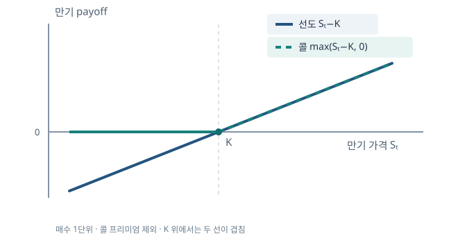

파생상품의 구조와 시장 참여자
한쪽의 이익이 다른 쪽의 손실이라는 말은 계약의 지급액을 설명하지만, 거래의 목적까지 설명하지는 않는다. 기존 사업 위험을 줄이는 사람과 그 위험을 받아 수익을 노리는 사람이 같은 계약의 양쪽에 설 수 있다.
기초 개념의 지도
모든 계약은 기초변수 \(X\), 만기 \(T\), 지급함수 \(g\)의 조합으로 볼 수 있다. 만기 지급액이 \(g(X_T)\)라면 선도는 \(g(S_T)=S_T-K\), 콜옵션은 \(g(S_T)=\max(S_T-K,0)\)이다. 이 표기는 가격을 계산하기 전에 계약이 어느 방향으로 위험에 노출되는지 보여 준다.
여기서 지급액은 만기에 계약이 주는 돈이고 순이익은 계약을 얻는 데 든 오늘의 비용까지 반영한 결과다. 공정한 새 선도는 보통 처음 지급액이 0이므로 만기의 \(S_T-K\)가 계약의 만기 손익과 같다. 콜옵션 매수자는 처음에 프리미엄 \(C_0\)를 지급한다. 금리를 무시하는 단순 예에서 만기 순이익은 \(\max(S_T-K,0)-C_0\)다. \(S_T>K\)라서 옵션을 행사해도 \(S_T-K<C_0\)이면 투자 전체로는 손실이다. 이 차이를 먼저 알아야 나중에 ‘옵션을 행사했다’와 ‘돈을 벌었다’를 혼동하지 않는다.
식의 단위도 빠뜨리면 안 된다. \(S_T\)와 \(K\)가 원/달러라면 \(S_T-K\)는 달러 1단위당 원화 손익이다. 계약 수량이 \(Q\)달러일 때 실제 만기 손익은 \(Q(S_T-K)\)원이다. 같은 환율 변화라도 계약 수량을 두 배로 하면 손익이 두 배가 된다. 옵션 프리미엄이 달러 1단위당 원화 가격이라면 전체 최초 비용은 \(QC_0\)이고, 만기 기준 순이익에는 그 비용을 만기까지 운용했을 때의 가치 \(QC_0e^{rT}\)를 빼야 한다. 지급액 그림의 세로축이 ‘1단위당 금액’인지 ‘전체 계약 금액’인지 확인하자.
옵션을 행사했는데도 투자 전체가 손실일 수 있을까?
가능하다. 행사가격 100인 콜을 8에 샀고 만기 주가가 105라면 행사로 5를 얻지만 처음 지급한 8을 회수하지 못한다. 금리를 무시한 순이익은 \(5-8=-3\)이다. ‘행사 여부’는 만기에 행사대상 가격이 행사가격보다 유리한지를, ‘투자수익’은 프리미엄까지 고려해 판단한다. 옵션의 행사가격과 손익분기점을 같은 숫자로 보지 않아야 한다.
정의에서 용도까지의 연결
먼저 계약의 지급액을 파악하고, 거래·결제 구조를 살핀 뒤, 헤지·투기·차익거래 중 어떤 목적으로 사용하는지 판단한다. 같은 원/달러 선도 매수라도 달러 지급 의무를 이미 진 수입업자에게는 헤지, 아무 달러 부채가 없는 투자자에게는 환율 상승에 대한 투기가 된다. 거래 목적은 계약 하나가 아니라 기존 포지션과 합친 손익으로 판정한다.
예를 들어 3개월 뒤 100만 달러를 지급해야 하는 수입업자에게 환율 \(S_T\)가 1원 오르면 원화 지급액은 100만 원 증가한다. 100만 달러 매수 선도는 같은 환율 상승에 100만 원 이익을 주므로 기존 노출을 상쇄한다. 반면 달러 지급 의무가 없는 투자자가 똑같은 선도를 사면 환율 상승 이익과 하락 손실을 새로 만드는 셈이다. 계약의 법적 형태가 같아도 포트폴리오에 더했을 때의 기울기가 다르다.
원화 비용을 식으로 쓰면 수입업자의 원래 노출은 \(A S_T\)이고, \(Q\)달러 매수 선도를 더한 순비용은 \(A S_T-Q(S_T-K)=(A-Q)S_T+QK\)다. 여기서 \(A-Q\)는 환율이 1원 오를 때 순비용이 몇 원 증가하는지 나타내는 기울기다. \(Q=A\)면 환율 위험이 사라지고, \(Q>A\)면 기울기가 음수가 되어 원래 위험의 반대 방향으로 지나치게 노출된다. 헤지 수량의 기준은 기존 위험의 크기라는 사실이 이 한 식에서 나온다.
계약을 많이 맺으면 언제부터 헤지가 투기로 바뀔까?
기존 달러 지급의무가 100만 달러인데 150만 달러 매수 선도를 맺으면 앞의 100만 달러는 비용 상승을 상쇄하지만 나머지 50만 달러는 환율 상승에 대한 새 노출이다. 총원화 비용의 환율 기울기는 원래 \(+100\)만에서 \(-50\)만으로 바뀐다. 헤지 목적이 있었다고 해도 실제 계약 수량이 기존 위험을 넘으면 과잉헤지의 부분을 따로 설명해야 한다.
‘파생’과 제로 순공급의 정확한 뜻
파생상품의 지급액은 주식, 금리, 환율, 원자재 가격 등 더 기초적인 변수에서 정해진다. 같은 선도계약의 매수자와 매도자를 함께 보면 만기 지급액은 \((S_T-K)+(K-S_T)=0\)이다. 이 의미에서 계약의 순공급과 계약 당사자 간 지급액 합계는 0이다. 다만 거래 수수료, 거래상대방 부도, 담보 비용, 세금, 기초자산을 이용한 생산 활동까지 포함한 경제 전체의 후생이 반드시 0이라는 뜻은 아니다. 서로 다른 위험을 가진 두 주체가 위험을 교환하면 양쪽 모두에게 가치가 있을 수 있다.
위험을 싫어하는 사람이 미래 소득의 변동을 줄이면 평균 소득이 그대로여도 만족도가 높아질 수 있다. 미시경제학의 오목한 효용함수 \(u\)에서는 일반적으로 \(E[u(W)]\le u(E[W])\)다. 수출기업의 달러 매출과 수입기업의 달러 구매비용은 환율에 반대 방향으로 노출된다. 서로 선도를 맺어 각각의 현금흐름 변동을 줄이면, 계약 지급액의 합계는 여전히 0이어도 두 기업이 원하는 위험구조에 더 가까워질 수 있다. 물론 거래가격·신용위험·수수료가 너무 불리하면 어느 한쪽에 이득이 없을 수도 있다.
두 상태가 같은 확률이고 재산이 80원 또는 120원이라면 평균은 100원이다. 효용을 \(u(W)=\sqrt{W}\)로 놓으면 위험한 재산의 기대효용은 \((\sqrt{80}+\sqrt{120})/2\approx9.95\)인 반면 확실한 100원의 효용은 10이다. 파생계약으로 평균을 크게 바꾸지 않으면서 나쁜 상태의 재산을 보완할 수 있다면 그 차이가 거래의 편익이 된다. 이 수치는 제로섬 지급액과 양의 위험분담 편익이 양립할 수 있다는 직관을 보여 준다. 실제 계약가격은 두 주체의 위험 선호와 기존 노출에 따라 정해진다.
지급액의 합이 0인데 왜 두 기업이 모두 거래를 원할까?
수출기업은 달러 약세가, 수입기업은 달러 강세가 나쁜 상태다. 서로 반대 방향의 원래 위험을 가진 두 기업이 계약을 맺으면 한쪽의 선도손실은 그쪽 사업의 유리한 환율 변화와 함께 나타날 수 있다. 위험을 싫어하는 주체에게는 평균 현금흐름뿐 아니라 나쁜 상태의 현금흐름을 안정시키는 일에도 가치가 있다. 계약의 제로섬 지급액과 양쪽의 위험분담 편익은 서로 다른 개념이다.
지급액 함수를 수학적으로 읽기
파생상품의 만기 지급액은 현재까지의 기초변수 경로 \(\{S_u:0\leq u\leq T\}\)의 함수로 쓸 수 있다. 선도는 최종 가격만 쓰는 \(S_T-K\)이므로 경로 독립적이다. 반면 장벽옵션은 중간에 장벽 \(H\)를 한 번이라도 넘었는지를 포함하므로 같은 \(S_T\)에서도 지급액이 달라질 수 있다. 선형 계약은 \(S_T\)가 1만큼 바뀔 때 손익이 일정하게 바뀌지만, 옵션처럼 꺾이는 계약은 구간마다 민감도가 다르다.
이 식의 \(q>0\)은 매수 수량이다. 선도는 \(S_T\)가 \(K\)보다 낮아져도 계약을 이행해야 하므로 손익의 기울기가 계속 \(q\)다. 콜옵션 매수자는 \(S_T\le K\)일 때 행사하지 않아 지급액이 0이고, \(S_T>K\)일 때 기울기가 \(q\)다. 따라서 선도에는 의무가 있고 옵션에는 선택권이 있다. 이 선택권이 일방적으로 유리하므로 콜을 공짜로 주지 않는 것이 일반적이다. 위 식은 옵션의 지급액이며, 순이익에는 처음 낸 프리미엄의 만기 가치도 빼야 한다.
콜의 만기 순이익을 \(q[\max(S_T-K,0)-C_0e^{rT}]\)로 쓰면 손익분기점은 \(S_T=K+C_0e^{rT}\)다. 행사가격 \(K\)를 넘는 순간 행사할 가치는 생기지만, 프리미엄까지 회수하는 것은 더 높은 가격에서다. 선도 매수의 손익분기점은 최초 가치가 0인 계약이라면 \(S_T=K\)다. 옵션의 구간별 기울기와 프리미엄을 구분하면 왜 옵션이 ‘손실 제한, 상승 이익’ 모양을 갖는지 수식으로 설명할 수 있다.
‘선형’이라는 표현의 작은 엄밀성
\(S_T-K\)는 수학적으로 원점을 지나는 선형함수보다는 절편이 있는 아핀함수다. 금융에서는 기초가격에 대한 기울기가 일정하다는 뜻으로 관습적으로 선형 지급액이라고 부른다. 이때 민감도는 \(\partial\Pi/\partial S_T=q\)다.
콜옵션의 손실이 제한된다는 말은 모든 옵션 거래에 맞을까?
그 말은 프리미엄을 내고 콜을 매수한 쪽의 계약 손실에 관한 것이다. 콜 매도자는 처음 받은 프리미엄을 넘는 손실을 볼 수 있고, 기초가격이 크게 오를수록 지급 의무가 커진다. 또한 콜 매수자도 옵션 외에 보유한 주식·차입 포지션까지 합치면 포트폴리오 전체 손실이 프리미엄으로 제한되지는 않는다. 어느 쪽 포지션과 어느 범위의 손익인지 명시해야 한다.

거래 장소와 계약의 층위
거래소 파생상품은 수량·만기·결제 단위를 표준화하여 다수 참가자가 호가를 낸다. 장외(OTC) 파생상품은 두 당사자가 필요에 맞게 조건을 설계한다. 이는 거래 장소의 구분이다. 한편 ELS·DLF 같은 구조화상품은 투자자가 매수하는 증권·펀드의 지급액 안에 옵션과 채권 등이 내재된 포장 형태다. 따라서 ‘거래소/장외’와 ‘독립 계약/구조화상품’은 서로 다른 분류 축이다.
예를 들어 KOSPI200 선물은 거래소에서 표준화되어 거래되고, 특정 기업의 환위험에 정확히 맞춘 환선도는 장외에서 설계할 수 있다. ELS는 여러 지수의 하락 구간에 노출되는 옵션을 사실상 매도한 것과 비슷한 손익을 투자자에게 줄 수 있다. 명칭만으로 원금 보장 여부를 추론하면 안 된다.
거래소 표준화는 계약 상대방을 찾기 쉽게 하지만 원하는 금액·만기와 정확히 일치하지 않는 위험을 남길 수 있다. 장외 계약은 지급일과 금액을 맞출 수 있는 대신 상대방의 신용과 담보 조건을 직접 검토해야 한다. 이 두 문제는 서로 다른 축이다. 또한 거래소에서 매매된 파생상품을 바탕으로 만든 ELS라 해도 최종 투자자가 받는 것은 ELS 발행자의 약속이므로, 기초지수 위험과 발행자 신용위험을 함께 살펴야 한다.
ELS 발행자가 거래소 옵션으로 헤지하면 발행자 부도 위험이 없어질까?
ELS 투자자가 보유하는 것은 구조화된 지급액을 약속한 발행 증권이다. 발행자가 내부적으로 거래소 옵션을 사용해 위험을 헤지하더라도 투자자의 최종 청구권은 발행자에 대한 것이므로 신용위험이 남는다. 기초지수 손익과 발행자 신용을 별도 줄로 적어 보아야 한다. 상품에 편입된 거래소 계약의 청산 구조가 ELS 자체에 자동으로 이전되는 것은 아니다.
계약·신용위험·검증가능성
파생상품은 약속이므로 누가 약속을 지키는가가 중요하다. 장외거래는 양자 신용위험을 직접 관리하고, 청산소를 거치는 거래는 청산소·회원의 보증금과 손실분담 체계가 개입한다. 위험이 사라지는 것이 아니라 담보와 정산 규칙에 따라 다시 배분된다. 계약의 참조 가격과 계산 방식은 독립적으로 검증 가능해야 분쟁이 줄어든다.
기초가격에 대한 파생거래의 영향이 무시될 만큼 작다는 ‘외생성’은 분석을 단순하게 하는 가정이다. 대규모 헤지나 만기 직전 포지션은 현물시장에 영향을 줄 수 있어, 현실에서는 이 가정을 확인해야 한다. 또한 다른 계약과 연동된 조기종료 조항이 있으면 하나의 지급액만 따로 계산해서는 안 된다.
계약의 시장가치가 양수인 쪽이 상대방 부도에 노출된다. 오늘 가치가 0인 선도라도 환율이 바뀌어 매수자에게 1억 원의 가치가 생기면, 매도자가 지급하지 못할 때 그 가치가 손실될 수 있다. 담보를 매일 교환하면 노출을 줄일 수 있지만 담보 자체를 마련할 유동성은 필요하다. 청산소도 일일정산·증거금·회원의 재원으로 위험을 관리하는 조직이므로, ‘청산소가 있다’는 말만으로 모든 신용위험이 0이라고 결론 내릴 수 없다.
오늘 가치가 0인 선도에도 거래상대방 위험이 있을까?
체결 직후 가치가 0이어도 이후 환율이 움직이면 한쪽 계약가치는 양수가 된다. 매수자에게 가치가 1억 원인 시점에 매도자가 지급을 못하면 매수자는 같은 계약을 다시 맺는 데 드는 대체비용을 잃는다. 담보와 일일평가는 이 노출을 줄이지만 정산 사이의 가격변화와 담보 부족 가능성은 남는다. 최초 가치와 미래 신용노출을 분리해 생각해야 한다.
역사는 위험 이전의 수요가 오래되었음을 보여 준다
농산물 생산자는 수확 전에 가격을 고정하고 싶고, 구매자는 원재료 비용을 고정하고 싶다. 이런 수요가 오늘날 거래소가 생기기 전부터 선도 형태의 약속을 낳았다. 현대 거래소의 기여는 가격위험을 새로 만든 데 있지 않고, 계약을 표준화하고 매매·청산을 조직해 더 많은 상대방을 만나게 한 데 있다. 고대 문헌의 일화나 최초 거래소의 연대는 ‘현대적 파생계약과 동일했다’는 뜻으로 읽기보다 미래 불확실성을 계약으로 다루려는 필요가 오래되었다는 사례로 읽는 편이 정확하다.
밀을 재배하는 농부가 수확 전 가격 \(K\)를 정해 매도하면 만기 시장가격 \(S_T\)가 떨어질 때 현물 매출 감소를 선도 이익 \(K-S_T\)가 보완한다. 반대편 제분업자는 밀 매수 선도로 원재료 비용의 급등을 막는다. 농부와 제분업자는 같은 가격위험을 서로 반대 방향으로 갖고 있었기 때문에 계약이 성립할 수 있다. 다만 실제 수확량이 예상보다 적거나 품질·인도 장소가 표준계약과 다르면 가격만 고정해도 전체 사업 현금흐름은 완전히 고정되지 않는다. 이런 차이를 베이시스 위험과 수량 위험으로 나누어 볼 수 있다.
밀 생산자가 가격을 고정했는데도 매출이 불확실한 이유는?
선도는 정해진 수량의 단위당 가격위험을 줄이지만 수확량까지 보장하지 않는다. 1,000부셸을 팔기로 했는데 악천후로 600부셸만 생산되면 부족한 400부셸을 시장에서 조달해야 할 수 있다. 품질이나 인도 장소가 계약과 다르면 추가 비용도 생긴다. 가격헤지, 생산량 위험, 베이시스 위험을 각각 계산해야 농부의 실제 현금흐름을 알 수 있다.
세 가지 사용 목적
투기는 전망에 따라 새로운 위험을 진다. 차익거래는 동일한 현금흐름의 가격 차이를 이용한다. 헤지는 이미 지닌 위험을 줄인다. 세 목적은 엄격히 분리되지 않는다. 딜러는 고객의 헤지를 받아들여 재헤지하고, 남는 위험을 보유하거나 다른 고객에게 넘긴다. 국내의 ELS와 DLF 사례는 판매 단계의 정보와 실제 손익 구조가 왜 중요한지 보여 준다.
달러 매수 선도 \(Q(S_T-K)\) 하나만 보고 목적을 분류할 수 없는 이유는 선도 자체가 누구에게나 같은 지급액을 주기 때문이다. 분류에 필요한 추가 정보는 계약 전의 현금흐름 \(C_T(S_T)\)다. 계약 후 현금흐름은 \(C_T(S_T)+Q(S_T-K)\)이고, 위험을 줄이려면 문제로 삼는 상태에서 이 합계의 변동이 원래보다 작아야 한다. 반면 차익거래라고 부르려면 단지 평균 수익이 높아 보이는 수준이 아니라, 필요한 거래를 동시에 실행하여 모든 상태에서 손실이 없고 적어도 한 상태에서 이익이 있어야 한다.
비슷한 채권 두 개의 가격 차이를 이용하면 언제나 차익거래일까?
신용등급, 지급일, 담보 적격성, 거래 가능성이 하나라도 다르면 미래 현금흐름이 상태별로 같지 않을 수 있다. 두 채권의 가격 차이가 과거 평균으로 돌아올 것이라는 거래는 상대가치 투자이며 손실 가능성을 가진다. 엄밀한 차익거래라고 하려면 싼 자산 매수와 비싼 자산 매도를 동시에 실행하고, 만기 모든 상태에서 지급액이 상쇄됨을 보인 뒤 비용을 빼도 확정 이익이 남아야 한다.
DLF를 현금흐름으로 분해하기
금리연계 DLF는 펀드라는 포장 속에 특정 해외 금리·스프레드가 임계값 아래로 내려가면 큰 원금손실이 생기는 구조를 담을 수 있다. 예를 들어 단순화한 만기 지급액을 \(N[1+c-\lambda\max(H-X_T,0)]\)라 두면, 금리 지표 \(X_T\)가 \(H\)보다 낮아질 때 손실이 기울기 \(\lambda\)로 커진다. 높은 표면 쿠폰 \(c\)는 이 하방위험을 떠안는 대가다. 이 식은 구조를 설명하는 교육용 예시이며 실제 계약은 관측일·최대손실·중도환매 조건에 따라 달라진다.
설명 의무의 경제적 핵심은 판매자와 투자자의 정보 차이다. ‘예상되는 이자’만 보여 주고 손실 구간의 확률·규모와 발행자 위험을 생략하면 투자자는 비교할 수 없다. 국내 금리연계 DLF 논란을 볼 때도 상품 손실과 판매 절차의 문제를 구분해야 한다.
식을 숫자로 읽어 보자. 원금 \(N=100\)만원, 약정 쿠폰 \(c=4\%\), 경계 \(H=0\), 기울기 \(\lambda=10\)인 교육용 구조에서 지표가 \(X_T=1\%\)이면 옵션 손실항은 0이고 지급액은 104만원이다. \(X_T=-1\%\)이면 \(\max(H-X_T,0)=0.01\)이므로 지급액은 \(100(1.04-10\times0.01)=94\)만원이다. 지표가 2%포인트 더 내려가 \(-3\%\)가 되면 지급액은 74만원으로 줄어든다. 지표 1%포인트 하락이 원금 10%포인트 손실로 번지는 구간을 확인해야 표면 쿠폰 4%의 의미를 알 수 있다. 실제 계약의 지급액에는 원금 하한, 만기·중도환매 조건과 여러 관측일이 포함될 수 있다. 금융위원회의 해외금리연계 DLF 점검.
이 단순식은 \(X_T\)가 충분히 낮아지면 음의 지급액까지 예측한다. 일반적인 투자상품의 손실 한도가 원금 100%라면 실제 지급함수에는 \(\max\{0,N[1+c-\lambda\max(H-X_T,0)]\}\) 같은 바닥이 필요하다. 실제 상품을 분석할 때는 이 바닥이 있는지, 쿠폰이 조건부인지, 여러 지표 중 어떤 지표가 손실을 결정하는지를 계약조건에서 확인해야 한다. ‘최악의 경우 원금 전액 손실’이라는 문구만으로 어느 금리 수준에서 그 구간에 진입하는지도 알 수 없다. 지급함수의 꺾이는 지점을 직접 계산해야 위험의 크기가 보인다.
DLF의 높은 쿠폰을 예금 이자처럼 비교하면 왜 위험할까?
예금 이자는 약정과 예금자보호 조건 아래의 지급이고, 구조화 DLF의 쿠폰은 손실 구간의 옵션 위험을 떠안는 대가일 수 있다. 예컨대 표면 쿠폰 4%와 ‘지표 1%포인트 하락 때 원금 10%포인트 손실’이 함께 있다면 작은 쿠폰을 위해 큰 하방 노출을 판 셈이다. 지급함수의 경계와 최악 상환액을 먼저 계산한 뒤 다른 상품과 비교해야 한다.
투기는 왜 파생상품으로 하는가
기초자산을 직접 사지 않아도 작은 초기 담보로 큰 명목 노출을 만들 수 있어, 같은 가격변화가 자기자본 수익률에 크게 반영된다. 예를 들어 100만 원 노출의 선물에 담보 10만 원을 넣고 기초가격이 2% 떨어지면 계약손실 2만 원은 담보 대비 20%다. 반대로 2% 오르면 20% 수익이지만, 손실은 추가 담보 납입을 요구할 수 있다. 레버리지의 분모는 계약의 경제적 노출이 아니라 투입 자기자본이다.
전망이 옳아도 현금이 부족하면 만기까지 버티지 못한다. 따라서 방향 예측과 함께 변동성, 손절 기준, 담보 여력, 거래 종료 시점을 정해야 한다.
위 예에서 담보 10만 원은 선물의 매입가격이 아니라 이행을 보증하는 자금이다. 계약손실 2만 원은 시장에서 사라지는 것이 아니라 일일정산을 통해 계좌에서 빠져나가며, 잔고가 유지증거금 밑으로 내려가면 추가 납입이 필요해질 수 있다. 가격이 다음 날 회복하더라도 오늘의 현금 부족으로 포지션을 청산해야 한다면 최종 전망은 소용없다. 레버리지를 볼 때 명목원금/담보 비율과 함께 하루 변동이 계좌 잔고에 주는 충격을 계산해야 한다.
증거금 10만 원으로 100만 원어치를 거래하면 손실도 10만 원까지일까?
선물의 증거금은 옵션 프리미엄처럼 최대 손실을 확정하는 매입대금이 아니다. 명목노출 100만 원이 15% 불리하게 움직이면 단순 손실 15만 원은 최초 담보 10만 원을 넘는다. 중개회사는 추가 납입을 요구하거나 포지션을 청산할 수 있다. 손실한도는 계약의 지급함수와 시장가격에 달려 있으며 처음 예치한 담보액으로 정해지지 않는다.
차익거래의 전제와 한계
같은 미래 지급액 \(X_T\)를 가진 두 포트폴리오가 오늘 서로 다른 가격이라면 싼 것을 사고 비싼 것을 팔아 차액을 잠글 수 있다. 그러나 ‘비슷한’ 현금흐름만 가진 상대가치 거래는 가격 차이가 더 벌어질 수 있으므로 엄밀한 무위험 차익거래가 아니다. 거래비용, 공매도 제약, 담보 요구, 거래상대방 부도도 실제 실현 가능성을 좌우한다.
왜 가격이 같아야 할까? \(P_0^{(A)}<P_0^{(B)}\)라고 가정하고 오늘 A를 사고 B를 판다면 순현금 \(P_0^{(B)}-P_0^{(A)}>0\)을 받는다. 만기에는 A에서 \(X_T\)를 받고 B에 \(X_T\)를 지급해 어느 상태에서나 순현금 0이다. 오늘 받은 돈을 안전하게 보관할 수 있다면 위험 없이 이익이 확정된다. 따라서 동일한 만기, 통화, 지급 조건, 신용위험을 가진 복제 가능한 현금흐름에는 가격 차이가 지속되기 어렵다. 이 논증에서 A와 B의 만기 지급액이 한 상태라도 다르면 위험이 남는다.
이것이 일물일가의 원리다. 뒤에서 선도 가격을 유도할 때 ‘현물을 사서 보유한 포트폴리오’와 ‘선도계약’을 같은 만기 현금흐름으로 만들 것이다.
예를 들어 A와 B가 모두 만기에 확실히 100원을 지급하고 거래비용·부도 가능성이 없다면 오늘 A가 95원, B가 97원인 상태는 유지되기 어렵다. A를 사서 B를 공매도하면 오늘 2원을 받고 만기에는 \(+100-100=0\)이다. 반대로 두 계약이 서로 다른 날짜에 100원을 지급한다면 할인 기간이 달라 같은 현금흐름이 아니다. 금리·환율·담보·과세·조기종료 조건 중 하나가 달라도 겉보기 가격 차이가 실제로는 위험의 대가일 수 있다. 무차익 논증은 먼저 ‘정말 같은 지급인가’를 증명한 뒤에 적용한다.
똑같이 100원을 지급하는데 만기가 다르면 왜 가격이 다를까?
오늘 금리가 양수라면 6개월 뒤의 확정 100원과 1년 뒤의 확정 100원은 오늘 가치가 다르다. 연속복리율 \(r\)에서 각각 \(100e^{-0.5r}\)와 \(100e^{-r}\)이다. 일물일가를 적용하려면 금액뿐 아니라 지급 날짜와 통화, 신용조건까지 같아야 한다. 시점이 다른 지급액을 먼저 같은 시점으로 옮기지 않으면 겉보기 가격 차이를 잘못된 차익거래로 해석한다.
헤지는 전체 손익의 기울기를 바꾼다
달러 1달러를 만기에 사야 하는 수입업자의 원화 비용은 \(S_T\)다. 달러 매수 선도의 만기 이익은 \(S_T-K\)이므로 실제 구매비용에서 이를 빼면 \(S_T-(S_T-K)=K\)로 고정된다. 이것이 완전헤지다. 절반만 헤지하면 비용은 \(\tfrac12S_T+\tfrac12K\)로 기울기가 절반 남는다. 비용 급등 위험을 줄이는 동시에 환율 하락의 혜택도 절반 포기한다.
일반적으로 필요한 달러 수량을 \(A>0\), 선도로 고정한 달러 수량을 \(Q\in[0,A]\)라고 하면 원화 순비용은 \(AS_T-Q(S_T-K)=(A-Q)S_T+QK\)다. 환율에 대한 민감도는 \(A-Q\)이므로 \(Q=A\)에서만 0이 된다. 예컨대 \(A=100\)만 달러, \(K=1{,}300\)원/달러, \(Q=50\)만 달러면 환율이 \(1{,}200\)원일 때 비용은 12.5억 원, \(1{,}400\)원일 때는 13.5억 원이다. 헤지하지 않았다면 각각 12억 원과 14억 원이고, 완전헤지라면 두 경우 모두 13억 원이다. 변동 폭을 줄이는 대신 좋은 환율의 혜택 일부도 포기한다는 교환이 숫자로 드러난다.
헤지는 ‘이익을 보장’한다기보다 원하지 않는 상태 의존성을 줄인다. 기존 노출의 양과 방향을 쓰지 않고 선도를 거래하면 헤지인지 판단할 수 없다.
완전헤지가 항상 최선은 아니다. 수입업자의 실제 달러 필요량 \(A_T\)가 아직 확정되지 않았는데 예상 수량만큼 선도를 매수하면, 판매량이 줄어 달러가 덜 필요할 때 선도 물량이 남는다. 선도 만기와 실제 지급일이 어긋나거나, 선도 기초환율과 기업이 적용받는 환율이 다르면 가격 변동도 완전히 상쇄되지 않는다. 이런 경우에는 \(Q=A\)라는 정적 계산에 더해 수량·시점·기초가격의 일치 여부를 확인해야 한다. 헤지의 목표가 ‘분산 최소화’인지 ‘나쁜 상태의 현금 부족 방지’인지에 따라서도 적정 \(Q\)가 달라진다.
헤지하지 않은 절반은 언제 오히려 유리할까?
달러를 사야 하는 수입업자가 절반만 1,300원에 고정했다면 만기환율 1,200원에서 나머지 절반은 싼 시장가격으로 살 수 있다. 전체 100만 달러 비용은 50만 달러를 1,300원, 50만 달러를 1,200원에 사서 12.5억 원이다. 완전헤지의 13억 원보다 5천만 원 낮다. 환율이 1,400원이면 순서가 반대가 되므로 부분헤지는 좋은 상태의 혜택과 나쁜 상태의 보호를 함께 나눈다.
세 목적을 다시 판별하기
거래 전에 다음 세 질문을 적자. 기존 현금흐름의 위험이 있는가? 새 계약을 더했을 때 나쁜 상태의 손실이 줄어드는가? 현금흐름을 복제해 오늘 가격 차이를 확정할 수 있는가? 첫째와 둘째가 참이면 헤지, 셋째가 참이면 무차익거래다. 기존 위험이 없는데 새 계약으로 가격 방향에 노출된다면 투기에 가깝다. ELS 투자자가 표면 쿠폰만 보고 하방 옵션 매도의 위험을 보지 못한 경우는 이 구분이 특히 중요하다.
세 번째 질문은 앞의 두 질문과 배타적이지 않다. 딜러가 고객에게 선도를 매도한 뒤 현물과 차입으로 반대 위험을 복제하면 고객 거래에 따른 위험을 헤지하면서 동시에 두 가격의 차이가 거래비용을 넘는지 살핀다. 고객에게는 사업 위험 축소가 목적이고, 딜러에게는 호가 제공과 재헤지가 목적이다. 따라서 실제 거래를 평가할 때는 ‘이 계약은 헤지 상품인가’보다 누가 어떤 기존 위험을 지니고 있었고 거래 뒤 어떻게 달라졌는가를 묻는 편이 생산적이다.
한 거래가 헤지이면서 차익거래 과정의 일부일 수도 있을까?
가능하다. 수입업자에게 달러 매수 선도를 제공한 딜러는 반대편 환율 위험을 가지므로 현물·차입·다른 선도로 이를 재헤지한다. 딜러가 두 시장의 가격 차이를 이용해 같은 지급액을 더 싸게 복제하면 가격 차이를 수익으로 얻을 수도 있다. 고객의 목적과 딜러의 목적은 다르다. ‘상품 하나의 목적’을 묻기보다 각 참가자의 기존 포지션과 거래 후 순노출을 따로 적어야 한다.
다음 질문: 왜 시장이 커졌고 어디서 실패했나
환율·금리·원자재 가격의 변화가 커지면 기업의 현금흐름을 안정화할 수단에 대한 수요가 커진다. 하지만 계약이 복잡해질수록 거래량의 성장과 위험관리 능력의 성장이 같지는 않다. 다음 장에서는 변동성, 세계화, 전산화가 거래를 늘린 경로와, 현금흐름·담보·조직통제의 실패가 어떻게 대형 손실로 이어졌는지 분리해 본다.
시장 규모가 커졌다는 사실만으로 순위험이 같은 비율로 커졌다고 해석해서도 안 된다. 명목원금은 계약의 기준금액이지 당장 잃을 수 있는 금액이 아니고, 거래량은 같은 포지션의 반복 매매를 중복해서 셀 수 있다. 반대로 작은 시장가치라도 큰 명목원금에 연동된 손익은 금리나 환율이 빠르게 움직일 때 급격히 커질 수 있다. 다음 장의 통계를 읽을 때는 거래량·미결제약정·명목원금·시장가치가 각각 무엇을 세는지 먼저 구분한다.
시장 명목원금이 두 배로 늘면 잠재 손실도 반드시 두 배일까?
명목원금은 이자나 가격변화를 곱하는 기준액이어서 직접 손실액과 같지 않다. 서로 반대 방향의 계약이 늘어나면 명목원금 합계는 커져도 순가격 노출은 작을 수 있다. 반대로 명목원금은 작아도 비선형 옵션이나 한쪽 방향에 집중된 포지션의 꼬리손실은 클 수 있다. 시장 규모를 비교할 때는 명목원금과 함께 시장가치, 상계 후 노출, 담보, 스트레스 손실을 보아야 한다.